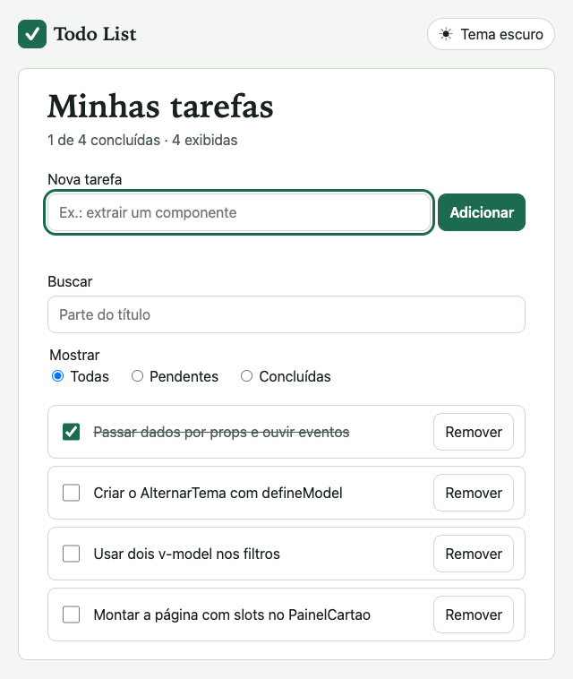

Desafio: componentes com v-model e com slots
Prático 5 (botão que alterna e emite evento), corrigido, e a última peça do conceito “componentes, props, eventos e slots”. Termina com a revisão do módulo.
| Critério | Evidência |
|---|---|
v-model num componente | AlternarTema e filtros sincronizados com o App |
| Slots | Título e subtítulo enviados ao PainelCartao |
| Prop × slot | Um exemplo de cada na Todo List |
<AlternarTema v-model="temaEscuro" />: que prop e que evento o
componente filho precisa ter para isso funcionar?
v-model = prop + evento; slot = conteúdo vindo do pai
<AlternarTema v-model="temaEscuro" />
<AlternarTema :model-value="temaEscuro"
@update:model-value="(valor) => (temaEscuro = valor)" />const escuro = defineModel({
type: Boolean,
required: true,
})
// ler escuro.value = ler a prop
// escrever = emitir o eventoPlayground: as duas formas, lado a lado
Com nome: v-model:busca ↔ defineModel('busca').
<section class="painel" :aria-labelledby="idTitulo">
<header>
<h1 :id="idTitulo">
<!-- slot nomeado, com conteúdo de reserva -->
<slot name="titulo">Todo List</slot>
</h1>
<slot name="subtitulo" />
</header>
<!-- slot padrão -->
<slot />
</section>Prop passa dados que o filho exibe do seu jeito (tarefa). Slot passa pedaços de interface que o pai monta (o subtítulo com o resumo).
AlternarTema e PainelCartao na Todo List
<script setup>
const escuro = defineModel({ type: Boolean, required: true })
</script>
<template>
<button type="button" class="alternar-tema"
:aria-pressed="escuro" @click="escuro = !escuro">
<span aria-hidden="true">{{ escuro ? '☾' : '☀' }}</span>
Tema escuro
</button>
</template><AlternarTema v-model="temaEscuro" />
<PainelCartao>
<template #titulo>Minhas tarefas</template>
<template #subtitulo>
<p class="subtitulo">{{ concluidas }} de {{ tarefas.length }} concluídas</p>
</template>
<TarefaForm … />
<TarefaFiltros v-model:busca="busca" v-model:situacao="situacao" />
<ul> … </ul>
</PainelCartao>
Tela real: estado final do Módulo 3.
Vue DevTools: selecione AlternarTema, veja a prop modelValue; clique e veja update:modelValue na Timeline.
ObserveRemova o <template #titulo>. O que aparece no lugar?
Prática: TarefaFiltros com dois v-model
- Ponto de partida
- A sua cópia da etapa 13. A pasta da etapa 14 já traz a solução.
- Tarefa
- Mova os campos de busca e situação (HTML e CSS) do
AppparaTarefaFiltros.vue, comdefineModel('busca')edefineModel('situacao'). - No App
<TarefaFiltros v-model:busca="busca" v-model:situacao="situacao" />- Evidência
- Busca e situação continuam filtrando juntas; o estado continua no
App.
Dica
Os rádios podem ser gerados com v-for sobre uma lista de opções { valor, rotulo }.
Mostrar solução (após a tentativa)
const busca = defineModel('busca', { type: String, default: '' })
const situacao = defineModel('situacao', { type: String, default: 'todas' })
const SITUACOES = [
{ valor: 'todas', rotulo: 'Todas' },
{ valor: 'pendentes', rotulo: 'Pendentes' },
{ valor: 'concluidas', rotulo: 'Concluídas' },
]<input id="busca" v-model="busca" type="search" />
<label v-for="opcao in SITUACOES" :key="opcao.valor">
<input v-model="situacao" type="radio" :value="opcao.valor" />
{{ opcao.rotulo }}
</label>Por que o prático 5 original não sincroniza com o pai
const props = defineProps({
initialValue: { type: Boolean, default: false },
})
const emit = defineEmits(['update:modelValue'])
const isActive = ref(props.initialValue) // cópia local
function toggle() {
isActive.value = !isActive.value
emit('update:modelValue', isActive.value)
}- O pai, com
v-model, enviamodelValue— que o filho não declarou.initialValuefica emfalse. - Se o pai mudar o valor por outro caminho, a cópia local não acompanha.
- Botão sem
aria-pressed: o estado não é anunciado.
const ligado = defineModel({ type: Boolean, default: false })
// <button :aria-pressed="ligado" @click="ligado = !ligado">Investigação: o v-model com nome trocado
<TarefaFiltros v-model:procura="busca" v-model:situacao="situacao" />Sintoma: digitar na busca não filtra mais. Nenhum erro, nenhum aviso.
- Vue DevTools ›
TarefaFiltros:procuraaparece como atributo solto, não como prop. - Compare o nome do
v-model:…com o dedefineModel('…').
Dica
Sem a prop busca vinda do pai, defineModel('busca') passa a guardar o valor só dentro do filho.
Mostrar solução
Nome do v-model e de defineModel precisam coincidir: v-model:busca ↔ defineModel('busca'). Volte para busca.
Mesma família do evento com nome errado (etapa 13): contrato entre pai e filho quebrado em silêncio.
Revisão do Módulo 3 em desafios
| Desafio | Etapa |
|---|---|
| Explicar, com o Network, de onde vêm HTML, CSS e JS | 06 |
| Mostrar o defeito de sincronia e por que o Vue o elimina | 06, 07 |
Seguir index.html → main.js → App.vue | 08 |
Dizer onde usar .value e onde não | 09 |
Explicar por que :key usa o id | 10 |
Diferenciar computed e watch com exemplos | 11, 12 |
Desenhar a árvore com props, eventos, v-model e slots | 13, 14 |
Próximos passos
15–17 rotas · 18–20 comunicação com APIs · 21–23 gerenciamento de estado.
Para pesquisar sozinho
Verificação final do Módulo 3, sem IA
- Variação
- Crie um
ContadorTarefas.vueque recebetotaleconcluidaspor props e mostra o resumo com um slot opcional para um ícone. - Justifique
- Por que props aqui, e não
v-model? - Consulta
- Documentação oficial; sem IA
| Critério (0–2) | 2 pontos quando… |
|---|---|
| Camadas e DOM | Explica request/response e o defeito de sincronia com evidência |
| Reatividade | Usa ref/.value e explica por que a tela acompanha |
| Template e diretivas | Lista com :key estável, condicionais e eventos corretos |
| Derivados e efeitos | Escolhe entre computed e watch e justifica |
| Componentes | Props, eventos, v-model e slots com um dono para o estado |